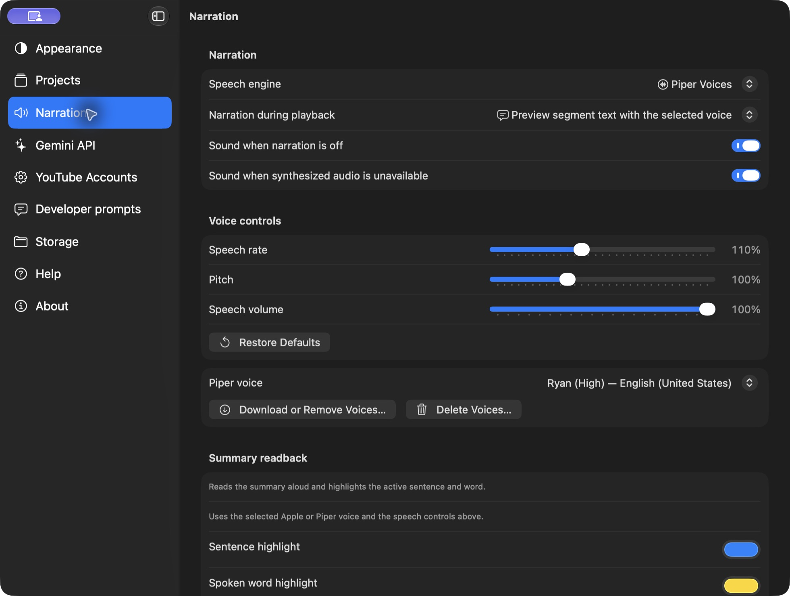
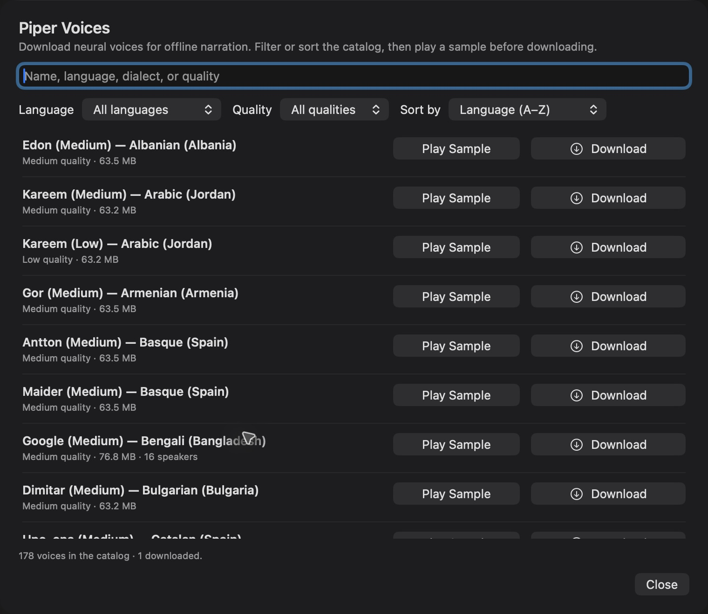
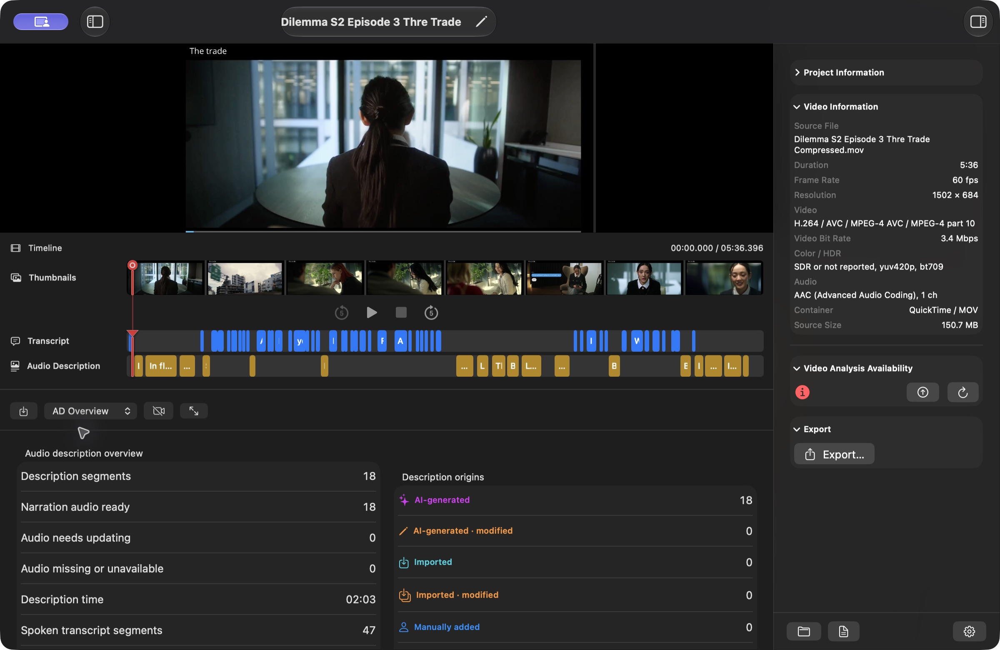

The Narration button in the editor enables narration for that project. The Narration during playback menu in Settings chooses how narration is delivered. These are separate controls: selecting a playback method does not turn on the project's Narration button.
Apple Voices are the built-in offline voices on this Mac; on Windows, the built-in offline choices are Windows OneCore and Windows SAPI 5 instead. Both desktops also offer Piper Voices (see below), and Gemini voices work on both platforms. In Settings > Narration, filter the voice list by Language and region or Search voices. Select a voice to override the system default. Use system default voice follows the current-language voice in macOS System Settings > Accessibility > Read & Speak. The selected label shows the resolved voice where available.
Use Play Sample below the list to hear the selection. The same control becomes Stop Sample during playback and returns to Play Sample after completion or cancellation. Individual voice rows also offer sample playback. Refresh Voices reloads installed voices after you download additional languages or enhanced voices. Open macOS Voice Settings takes you to Accessibility settings.

Piper Voices are free neural voices that run entirely on your device. The Piper speech engine is included with Vidi Studio, so you only download the voices you want. In Settings > Narration, choose Piper Voices, then open Download or Remove Voices. Search the public catalog, filter it by Language and Quality, and sort it by Language, Voice name, Quality, or Size. Each entry shows the voice name, quality, download size, and the language and dialect in plain English, such as English (United States) instead of a language code. Use Play Sample to hear a short published sample before installing a voice; the sample needs an internet connection and is cached locally, the button becomes Stop Sample while it plays, and that voice's row shows a waveform indicator. While a voice downloads, its row shows a progress bar, percentage, and downloaded size. Delete Voices lists only downloaded voices with the same search, filters, sorting, and Play Sample actions, and removing a voice shows a progress indicator while the model, its settings file, and cached sample are removed. Downloads are checked against their published size and checksum. Downloaded voices work offline for samples, saved narration, live preview, and summary read-aloud, and your narration text never leaves your device. Escape closes the voice dialogs. On Mac, voices are stored in Application Support; on Windows, they are stored in your app data folder.
Projects moved between Mac and Windows that used Piper keep their saved narration labels; choose Piper Voices and download the same voice to generate new narration with it.

In AD Overview, choose Generate All AD Audio to generate narration for every description. Generate Missing or Changed Audio and the inspector's Synthesize Changed Segments target missing audio or segments changed since synthesis, including voice-setting changes. These actions are also grouped under Project > Narration. You can synthesize one segment from its contextual menu.
Generation uses the current selected engine and voice settings. Apple and Piper generation use local speech; Gemini generation uses your configured key, model, and Gemini voice. Gemini 3.8 Flash TTS and Flash-Lite TTS speak each description's text verbatim. If generation reports that a segment takes longer than its gap, use Rewrite to Fit in the description's action menu or edit the words or timing before retrying. Review a rewrite and listen to the resulting file to verify it.
AD Overview separates where narration came from. Narration sources reports counts such as 3 AI-generated · 2 imported, or No narration audio. Imported audio adds the number of distinct imported files, and Narration voices lists generated voices. When every segment has imported narration, Narration voices reads Imported audio. In narration reports, an imported segment is labelled Imported audio with its source file name instead of a selected voice.
VidiStudio warns when a project mixes sources: “This project mixes AI-generated narration and imported narration. Imported segments never count as a different generated voice.” It also warns when imported narration comes from more than one file, listing the distinct imported files. The selected speech engine and voice apply only to new generation; they do not relabel or replace imported audio. Importing narration for one segment is described in Write and edit audio descriptions; it does not require an API key.
Older generated narration that has no recorded engine or voice appears as Unknown voice and is counted under unknown sources. An imported file with no recorded name appears as Unknown source file. These labels preserve the truth of the saved file instead of guessing from current settings.
A saved audio file remains playable and exportable after a voice change if its recorded text still matches the current description. Explicitly regenerating that segment creates speech with current settings. Editing its text makes its old narration out of date until regenerated. Changing the preview voice does not alter a previously exported video.
Sound when narration is off plays a player sound when entering an AD segment with narration disabled. Sound when synthesized audio is unavailable plays a sound when saved-audio playback is selected but the needed audio is absent or outdated. Live preview speech has no extra indication sound. Turn both sound settings off to hear no AD indication sounds. During narration or an indication sound, the original video audio is reduced to help the additional audio stand out.
Audio Sources separates the original soundtrack from narration. Playback audio can remain YouTube audio or use the imported original file in sync with the video. The Playing label identifies that choice, while available AD audio is shown separately. The Narration button continues controlling description playback, and narration lowers the active original soundtrack while speaking. Choosing a file for exports does not change playback or transcription unless you select those uses too.
Regenerate creates a new result for the selected language and section. Analyze Video and Regenerate All run the analysis stages without clearing existing results, narration, thumbnails, exports, or edit history. For a language that already has content, open Review in Language and Saved Results, compare the selected saved result and the new result, then choose Keep Both, Replace Selected, or Discard New. Keep Both is the default. Review Later leaves a recoverable draft, including after reopening the project. Replacement occurs only after successful generation and explicit review. Failed or cancelled work keeps saved results. Narration generation and segment reanalysis follow the same alternative-result workflow.
Edit mode: Select the tab you want to work on, then choose Edit (or Enter Edit Mode in the Mac inspector). Language and Saved Results shows transcript controls on Transcript, summary controls on Summary, and description/narration controls on Descriptions. AD Overview shows description/narration results; AD Transcript shows its transcript and description sources. Only View Project Language is a shared project setting. View Project Language and saved-result selection are available in view mode. Changing section generation targets, using Keep All Sections in Sync, and assigning a language label require Edit mode. Save or cancel pending summary edits before changing languages or saved results. Choosing a target does not translate existing content; generate a result to create text in that language.
Transcript Generation Language, Summary Generation Language, and Descriptions and Narration Generation Language each have their own target-language picker in Language and Saved Results. Choose a specific language or Auto independently for each section. For example, a Hindi video can have an English transcript, a Hindi summary, and Marathi descriptions. Follow Project Language is optional for each section; those generation targets follow View Project Language for future requests, while explicit targets stay independent. Viewing always uses View Project Language across sections. Keep All Sections in Sync returns every section to Follow Project Language without deleting saved results. AD Transcript uses the chosen transcript and description results; narration stays attached to its description version.
Use the single View Project Language picker in the right inspector or Project > Language and Saved Results to switch the language being viewed. AD Overview follows this same selection automatically, including description counts, transcript counts, origins, timing, audio readiness, and narration voices. There is no separate overview language picker. Choose a saved description/narration result for that viewing language when several versions exist. A language with no saved content shows zero counts. Viewing switches remain available without Edit mode; generation targets and language assignment remain in Edit mode.
Language-specific assets are stored by language and saved result, for example audio-description/English (en)/Descriptions - Version 2 - [result ID]/ and imports/Auto/Transcript - Version 1 - [result ID]/. Auto stays its own category. Existing available assets are organized on the next project operation; assigning a language updates the location and all links without translating text or changing recordings. Files shared by alternatives use Shared Results, and files referenced across languages use Shared/Shared Results. Saved text and edit history remain in project.json; source video, original soundtrack, metadata, and thumbnails are project-wide. Cleanup checks every saved result, draft, and history entry before removing files. Interrupted moves resume from a journal. Keep the entire project folder together and do not move individual files manually.
After narration generation or Project Cleanup, VidiStudio repairs missing narration references in undo/redo history. It reuses nonempty, usable narration from a saved result in the same language only when text, start time, and end time match exactly. Otherwise it preserves the older text and timing edit without an unavailable audio link; generate narration if you restore that edit. The original unavailable filename and repair decision are retained in the history entry. Current saved results and review drafts are not replaced or approved by this repair. Review Issues distinguishes missing narration for saved results from older recordings referenced only by undo/redo history. A history-only warning does not mean current playback or exports are missing audio. Restoring an older edit may require generating narration again. Moving current recordings cannot recreate missing historical recordings; restore those originals from a backup when available. The missing-file list identifies the language, saved result, and history context.